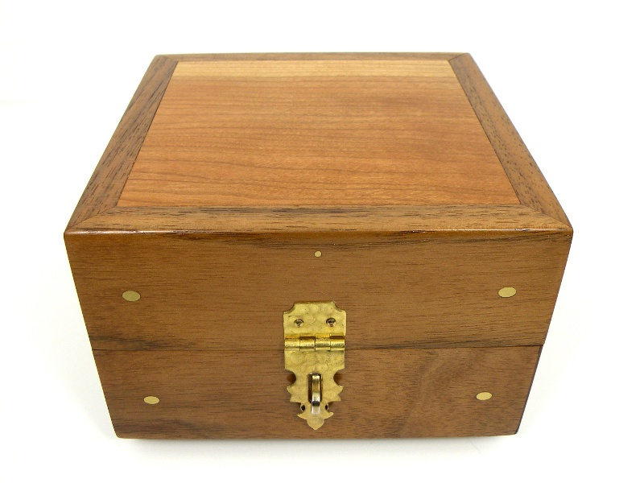
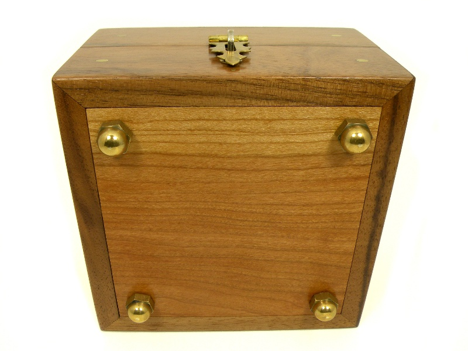
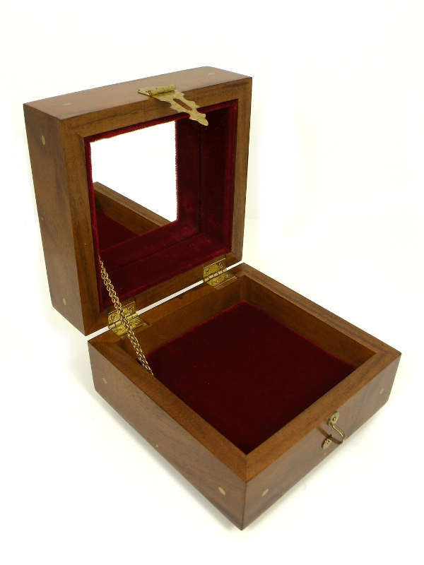
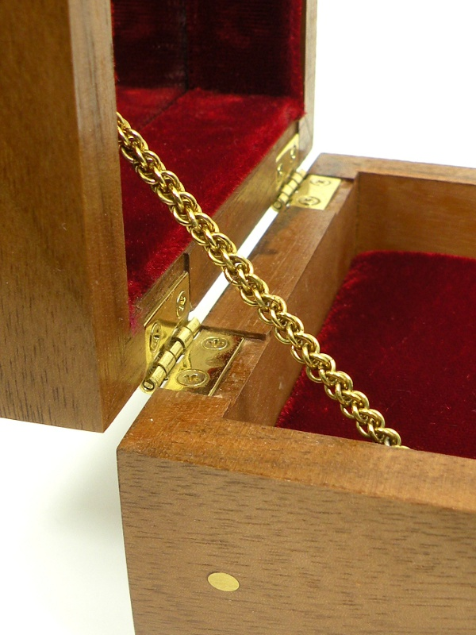

Jewelry Box Jewelry Box
Jewelry Box Jewelry BoxHaving made my girlfriend more jewelry than I could keep track of, I thought she deserved a nice box in which to keep it. This is my first attempt at a jewelry box, and I think it turned out well, even if I learned a lot about what not to do in the process.
The outside frame of the box is walnut, made from molding that I was given by a family member who works at a lumber yard. The top and bottom inserts are cherry, scraps from some very expensive doors installed in a government office building. All of the wood is finished with a linseed oil based varnish, rubbed out with 0000 steel wool to a satin sheen.
The latch is of the kind available at any hardware store, though I did a bit of custom profiling and applied a "machine turned" finish. In the process, I removed the clear lacquer coating; I would usually prefer to see brass age naturally to develop a rich, brown patina, rather than see flaking, yellow lacquer many years down the road.

The mitered corners were, this time, reinforced with 1/4" brass rods running diagonally through the joint. I built a jig so that I could drill perfect 45 degree holes using my drill press, then epoxied the brass rod stock through the holes. The cherry inserts are reinforced with brass pins in a similar manner.
The feet which make up the bottom of the box are solid brass acorn nuts, attached via 1/4" screws. I believe they were salvaged from a brass bed, but it took a lot of buffing and some sanding to make them look this good.
A mirror is inset under the lid of the jewelry box, which opens a full 90 degrees so that the mirror could be used, if needed. Red velvet surrounds the mirror and lines the bottom of the box.
The chain which stops the lid's travel is handmade from 20 gauge, solid brass wire. Solid brass chain is especially difficult to find, and I did not like the look of what was available in any case. As with most of my projects, I tried to focus on every detail to ensure that my work stands above the rest of what is out there. What sense is there in spending hours to make something nicer than the mass-produced junk sold in stores, if you use the same low-quality materials to make it?
Created by Sean Corron, April 2, 2011.